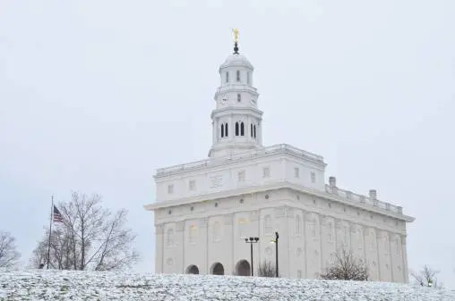
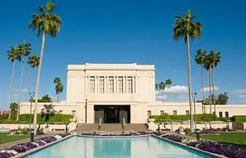

Explore the collection of stunning picture from around the world
Temple of Indepedence; Histotical Site, Missouri.
Kirtland Temple; First Temple Built, Ohio.

Nauvoo Illinois Temple; Rebuilt Structure, U.S.
St. George Utah Temple; First Operating Temple, U.S.
Logan Utah Temple; Architectural Design, U.S.
Salt Lake Temple; Iconic Landmark, U.S.
Laie Hawaii Temple; Tropical Location, O'ahu.

Mesa Arizona Temple; Desert Beauty.
Jordan River Utah Temple; Community Focus, U.S.